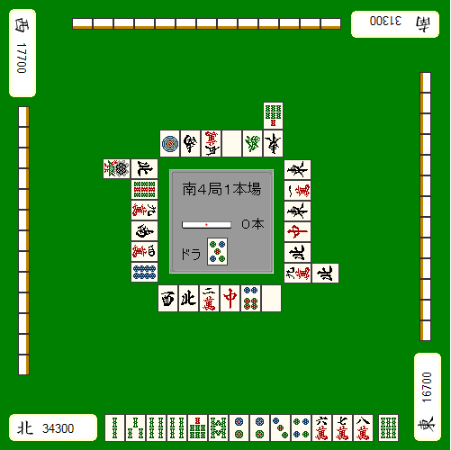
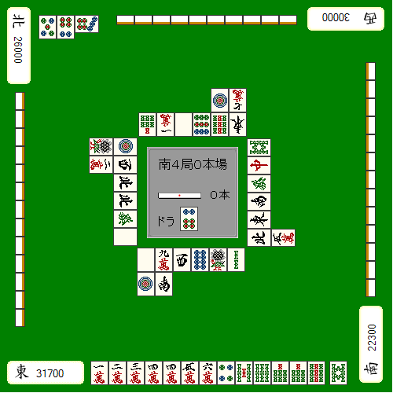
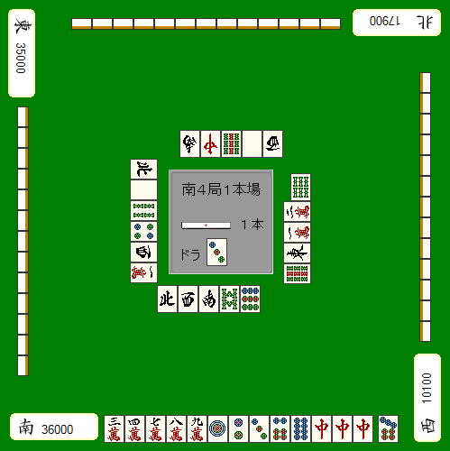

【日本麻雀讲座译文】状况判断8—ALL LAST的战术（二）
【日本麻雀讲座译文】状况判断8—ALL LAST的战术（二） · 原网页
译文与整理说明
原文、图和强调完整保留；例2的8s由真实独立靶审确认，两处河牌unknown及六条非原文限制同时展示。作者条件性判断按原力度保留，不认证完整牌河、暗手、实际听牌或概率/最优。旧uncertain/source-note及raw原样，未宣称普通模型整章通过。
免责声明： 以下文章的著作权等各种权利归原作者所有，翻译 By SeventhTG（XD）。如果你喜欢本文并有幸让你产生了转载的想法，请注明原作者、原文地址以及译者，谢谢。 原文地址：http://beginners.biz/joukyou/joukyou08.html ------------------------------------------------------------------------------------原文段落
这一节讲AL的立直判断。原文段落
在AL，平常时候应该立直的牌根据状况不同也有需要自重的时候。原文段落
因为有时候你会白白扔一根棒子顺位反而下降。原文段落
例1：原文段落

完整牌例文字与牌编码
中央：南4局1本场；立直供托0根；“宝牌”标签右侧为5p。 点数位置：下方北家（4z）34300点；右方东家（1z）16700点；上方南家（2z）31300点；左方西家（3z）17700点。 下方手牌从左到右：2s 3s 4s 4s 7s 8s 2p 2p 3p 4p 6m 7m 8m；最右侧分开的摸入牌：6s。 下方弃牌从左到右：3z 4z 2m 7z 6p 5z。 上方弃牌：靠中央一行从画面左到右为1p 2z 7m 5z 6z 1z；该行最右一张的上方另有7s。牌面朝向上方玩家。 左方弃牌：靠中央一列从画面上到下为4z 9s 9m 2z 4m 8p；该列最上方一张的左侧另有1s。牌面相对画面顺时针旋转90度。 右方弃牌：靠中央一列从画面上到下为1z 2m 1z 7z 4z 9m；该列最下方一张的右侧另有4z。牌面相对画面逆时针旋转90度。 暗手牌背：上方13张，左方13张，右方13张。未见赤牌。
特别是自己TOP迎来AL的情况。我们的目标是避免无效的立直结束牌局。原文段落
例1的牌2、5饼立直做满贯是平场的打法。原文段落
现在这样的点数状况就要默听，而且选择容易被打出的1、4索才是绝对的正确答案。原文段落
理论、总结：原文段落
AL自己TOP有役听牌应该默听。原文段落
如果别人的牌只是没什么翻盘机会的食断的话，有时候有役也可以立，铳了也没关系。原文段落
不过这样的话就要有被第二位满贯直击也无法逆转的点差（自己扔棒子的话就要18000点），这样的机会根本就不怎么多。原文段落
------------------------------------------------------------------------------------原文段落
例2：原文段落

完整牌例文字与牌编码
中央：南4局0本场；立直供托0根；“宝牌”标签右侧为6p。 点数位置：下方东家（1z）31700点；右方南家（2z）22300点；上方西家（3z）30000点；左方北家（4z）26000点。 下方手牌从左到右共13张：1m 2m 3m 4m 4m 5m 6m 4p 5s 6s 7s 8s 9s；最右侧分开的摸入牌为6z。 画面左上方的副露属于上方西家（对家）：从画面左到右为5p 6p 7p，其中7p横置，另外两张竖放；整组朝向上方玩家。 上方弃牌：靠中央一行从画面左到右为7s 1m 5z 9p 9s 1z；该行最右两张的上方，从画面左到右另有1p和一张数字不明的万子。牌面朝向上方玩家。 左方弃牌：靠中央一列从画面上到下为1p 3z 4z 4z 6z 5z；该列最上方一张的左侧另有1s，第二张的左侧另有3m。牌面相对画面顺时针旋转90度。 右方弃牌：靠中央一列从画面上到下为[索子，数字不明] 7z 6z 2z 1z 4z；该列最下方一张的右侧另有5m。牌面相对画面逆时针旋转90度。 下方弃牌：第一行从画面左到右为5z 9m 3z 8p 1s 2s；第二行位于第一行最左两张下方，从左到右为1p 2z。 暗手牌背：上方10张，左方13张，右方13张。未见赤牌。 原图未显示的信息：上方弃牌第二行最右一张，即1p右侧的万子：数字无法可靠辨认。；右方弃牌靠中央一列最上方一张：可辨为索子，数字无法可靠辨认。
AL自己TOP应该果断进攻的情况就是很容易被第二位逆转的时候。和第二位微差自己还扔棒子自然很容易被逆转。原文段落
但是例2这样的情况自己立直就没什么问题，毕竟对家已经满足了逆转的条件了。原文段落
虽然4、7万可以默听和牌，但是更容易被打出的1万却因为没役不能和。原文段落
正在做食断的对家很有可能打出1万，即使默听，也没有什么有效的牌能够改变这样的状况了。所以这牌应该干脆的立直。原文段落
由于自己扔了棒子，可能会由于上下两家的自摸从而使自己的顺位下降。但是目前两家都还没有听牌，就不要想其他的，果断进攻！原文段落
【审校范围（非原文）1】保留该位置的万子数字不明标记，不推补具体牌码。原文段落
【审校范围（非原文）2】该牌可能影响1万、4万或7万的可见张数，不能据此精确核算剩余张数或验证1万更容易被打出的判断。原文段落
【审校范围（非原文）3】对家做食断及已满足逆转条件应保留为作者的论述，不能当作已由可见牌面证实的暗手事实。原文段落
【审校范围（非原文）4】保留该位置的索子数字不明标记，不推补具体牌码。原文段落
【审校范围（非原文）5】不能完整核算索子牌河、剩余张数或据此独立验证改良机会。原文段落
【审校范围（非原文）6】保留作者所写上下两家尚未听牌的前提；隐藏手牌和实际听牌状态不能由本图确认。原文段落
------------------------------------------------------------------------------------原文段落
例3：原文段落

完整牌例文字与牌编码
中央：南4局1本场；立直供托1根；“宝牌”标签右侧为3p。 点数位置：下方南家（2z）36000点；右方西家（3z）10100点；上方北家（4z）17900点；左方东家（1z）35000点。 下方手牌从左到右：3m 4m 7m 8m 9m 1p 2p 3p 6p 8p 7z 7z 7z；最右侧分开的摸入牌：7p。 下方弃牌从左到右：4z 3z 2z 8s 9p。 上方弃牌从画面左到右：2z 7z 9s 5z 3z。牌面朝向上方玩家。 左方弃牌从画面上到下：4z 5z 4s 4p 3z 2m。牌面相对画面顺时针旋转90度。 右方弃牌从画面上到下：6s 2m 3m 1z 9s。其中6s相对其余弃牌横置，在画面中呈竖放；其余牌面相对画面逆时针旋转90度。 暗手牌背：上方13张，左方13张，右方13张。未见赤牌。
例3讲如何应对4位的立直。原文段落
切中保持默听是比较正点的一手。原文段落
不管下家自摸什么牌都终局了，根本没有必要与其正面对决。原文段落
切掉中，自摸2、5万的就算走运了。摸到危险牌就继续拆中果断弃和。原文段落
弃和基本上就保住TOP的状况还扔棒子简直是蠢到家了。原文段落
------------------------------------------------------------------------------------原文段落
最后再讲讲涉及到改良默听的一些东西。原文段落
AL应该期待改良听牌的情况很少，几乎都是期待一发或者里宝牌会更好一点。原文段落
例4：原文段落
完整牌例文字与牌编码
手牌从左到右：7m 8m 9m 1p 3p 6p 7p 2s 2s 3s 6s 7s 8s。 手牌右侧为“摸入”标签，其右侧单独一张2p。 再右侧为“宝牌”标签，其右侧单独一张3z。 所有牌均竖放，未见赤牌。
AL自己2位，差一手就能够三色听牌。原文段落
一发中里宝或者自摸中1里宝就能够逆转的状况的话，即立是正确的。原文段落
特别是3900点以内的点差，默听是损失非常大的打法。原文段落
和摸6万的概率相比，一发或者中里宝的概率要更大，这个大家用常识就可以知道的。原文段落
如果必须要自摸满贯的话，可以默听等摸6万改良。原文段落
但是，在三色做成之前荣牌打出来当然是要和的。能够改良的牌只有一种，而且就算改良了也要和出高目。原文段落
太过于期待这种苛刻的条件也是需要禁止的。原文段落
（待续）原文段落